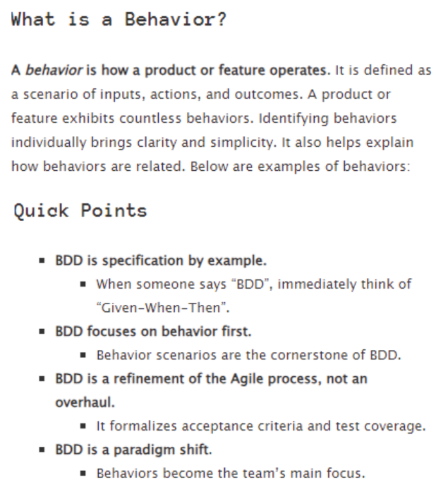
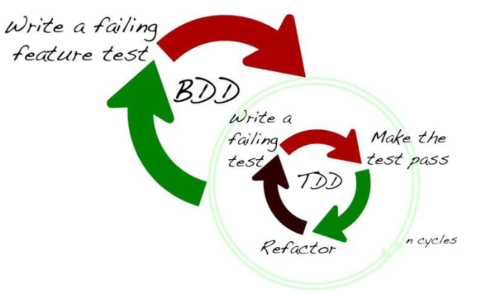
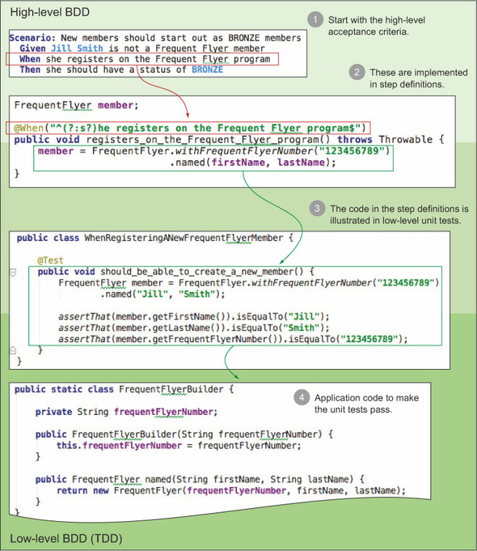

#Behavior Driven Development (BDD)
Behavior Driven Development (BDD) is a software development methodology and engineering approach that builds on the principles of Test-Driven Development (TDD) and Domain-Driven Design (DDD). The main objective of BDD is to bridge the communication gap between the business side (domain experts, product owners, business analysts) and the technical team (developers, test architects, and testers).
BDD replaces vague natural-language specifications with structured conversations about concrete examples of system behavior. These examples are written in a domain-oriented format (most commonly Gherkin) and serve simultaneously as ambiguous acceptance criteria, drivers of architecture development in an Outside-In direction, and executable automated tests. The result of BDD is not just a set of regression tests, but above all living documentation (Living Documentation) that reflects the actual behavior of the system and reduces the costs of long-term software maintenance.


#Definitions and basic concepts
#1. Behavior Driven Development (BDD)
- What it means: Behavior-driven development. A process and technical discipline in which requirements are defined through examples of system behavior from the user's or domain's perspective in a shared language (Ubiquitous Language).
- Why it is important: Prevents the creation of functionality that does not deliver business value (eliminates waste) and prevents misunderstandings in requirements before the first line of code is written.
- Significance in architecture: Enforces architecture designed in an Outside-In direction. The architecture must be divided into layers (e.g., Service Layer, API adapters) so that behavior can be isolated from infrastructure (UI, DB).
- Significance in testing: Unifies acceptance testing with development. Acceptance criteria directly become executable tests at both the highest and lower levels.
- Typical mistake or misconception: Reducing BDD to an automation tool alone (e.g., “we use Cucumber, so we are doing BDD”) without changing the team's communication culture.
#2. Gherkin format and Feature Files
- What it means: A structured natural-language format based on the keywords
Given(context/preconditions),When(action/event),Then(expected result), and the conjunctionsAnd/But. Requirements are stored in text files with the.featureextension. - Why it is important: Provides a human-readable but machine-processable format for specifying requirements.
- Significance in architecture: Defines the domain contract of a component's or the entire system's interface without coupling it to technical implementation details.
- Significance in testing: Enables a direct link (binding) between natural-language sentences and automated test code (Step Definitions) using regular expressions.
- Typical mistake or misconception: Writing scenarios in an imperative style (a detailed description of clicking in the UI and filling in forms) instead of a declarative style (a description of business intent and behavior).
#3. Executable specification (Executable Specifications)
- What it means: Acceptance criteria and tests written in a format that automation frameworks (Cucumber, SpecFlow, JBehave) can execute directly against the application and verify their validity.
- Why it is important: Provides a single source of truth (Single Source of Truth) – specifications and tests are the same artifact; when a requirement changes, the specification is updated and immediately fails in CI.
- Significance in architecture: Requires a high degree of testability (Design for Testability) – the system must provide interfaces (API, a service layer, fakes/stubs) on which specifications can be executed reliably and quickly.
- Significance in testing: Provides an objective criterion for completing development (Definition of Done) and eliminates outdated manual test case documentation.
- Typical mistake or misconception: Tight coupling of the specification to the internal database structure or specific user interface elements, which leads to brittle tests.
#4. Living documentation (Living Documentation)
- What it means: Automatically generated overviews and reports from the results of executing acceptance specifications on a CI/CD server, presented in the language of the business.
- Why it is important: Unlike static documents in Word/Confluence, it never becomes outdated because it reflects the actual state of the production code.
- Significance in architecture: Provides architects and managers with a real-time overview of domain feature coverage (Feature Coverage) and the implementation status of system modules.
- Significance in testing: Replaces lengthy manual regression testing and frees up QA engineers' capacity for exploratory testing and risk analysis.
- Typical mistake or misconception: The belief that living documentation fully replaces all architectural and technical documentation (e.g., SDS, deployment diagrams, or NFR documentation).
#5. Outside-In Development (Top-Down BDD)
- What it means: A development approach that starts by defining an acceptance test at the system's external boundary and works inward by designing internal components and unit tests.
- Why it is important: Ensures that developers write only the code necessary to satisfy the acceptance criterion (the YAGNI principle).
- Significance in architecture: Supports modular architecture and interface-driven design (Interface-Driven Design), in which dependencies are replaced with test doubles (Stubs/Mocks).
- Significance in testing: Connects high-level acceptance tests with low-level unit tests (Low-level BDD / RSpec / Spock) into a single continuous chain.
- Typical mistake or misconception: Developing isolated components "from the bottom up" (Bottom-Up) without verifying how they fit into the system's external behavior.
YAGNI = “You Aren't Gonna Need It” (You are not going to need it). Code should be written only when it is actually and demonstrably necessary for the application to run.
Example from embedded and safety-related software:
In industrial and automotive systems (e.g., according to ISO 26262 standards or established Valeo V&V guidelines), BDD can be applied at the HSI (Hardware-Software Interface) level.
Example scenario:Giventhe vehicle is moving at a speed greater than 50 km/h and the brake assist system is in READY mode,Whenthe radar detects an obstacle at a distance of less than 10 m,Thenthe ABS braking channel must send a signal to increase pressure to 100 bar within 50 ms.
This scenario serves as a reliable acceptance specification at both the model (MBD) and real target levels, ensuring full traceability (Traceability) from the requirement through the test specification to the validation results.

#Common mistakes and anti-patterns
[ BDD Anti-patterns ]
│
┌─────────────────────────────┼─────────────────────────────┐
▼ ▼ ▼
Architecture Requirements & Communication Automation & Tests
• Brittle coupling to UI/DB • Siloed handoffs (Silos) • Imperative scenarios
• Absence of test adapters • Missing "Three Amigos" • Ignoring Low-level BDD
• Bypassing the Service Layer • Tools > Conversations • Duplicate regression
Architecture mistakes (Strong coupling to infrastructure):
- Problem: Scenarios execute tests directly through the GUI or access the database directly without using isolation layers.
- Manifestation: A change to a UI button or a breaking change to the DB schema causes dozens of scenarios to fail collectively (high test brittleness).
- Remedy: Architecturally separate scenarios using test adapters (UI Adapter, API Adapter, Domain Layer Adapter) and use patterns such as Page Object or the Driver Pattern.
Requirements and communication mistakes (BDD in a silo / Absence of "Three Amigos"):
- Problem: A business analyst writes
.featurefiles alone and hands them over to developers and QA without discussion. - Manifestation: Scenarios lack technical feasibility, contain hidden assumptions, and do not reflect the actual architecture.
- Remedy: Introduce mandatory "Three Amigos" conversations (Analyst + Developer + Tester) before development begins on each User Story to clarify examples.
- Problem: A business analyst writes
Automation mistakes (Imperative vs. Declarative scenarios):
- Problem: A scenario describes steps in detail ("Click button X", "Enter Y into field Z", "Open the dialog").
- Manifestation: The scenario is long, difficult for the business domain to follow, and extremely demanding to maintain.
- Remedy: Transition to a declarative style ("When the user makes a payment"), in which technical steps are hidden in the automation layer (Step Definitions).
Test strategy mistakes (Ignoring Low-level BDD):
- Problem: Using BDD exclusively for high-level acceptance E2E tests and abandoning BDD principles at the unit and integration test levels.
- Manifestation: A slow-running test pyramid, a long feedback cycle in CI, and high maintenance costs.
- Remedy: Apply BDD syntax and structure in unit tests as well (using BDD frameworks such as Spock, RSpec, NSpec, or fluent assertion libraries).
Mistakes in interpreting testability and duplicate testing:
- Problem: Testers do not trust automated BDD scenarios and manually repeat the same scenarios after they pass.
- Manifestation: Unnecessary waste of QA capacity, extending the release cycle (Release Cycle).
- Remedy: Involve testers in creating and reviewing automated acceptance criteria and shift manual capacity toward exploratory testing.
#Exam questions
#Level 1: Basic questions
- What is BDD, and what is its main difference from traditional TDD?
- What a good answer should include: BDD builds on TDD but shifts the focus from testing code to specifying behavior in natural language. It introduces a shared language (Gherkin), supports Outside-In development, and emphasizes collaboration across the entire team (Three Amigos).
- Explain the structure of the Gherkin format and the meaning of the Given-When-Then keywords.
- What a good answer should include:
Givensets the initial state/context,Whendescribes the action or event being tested, andThenverifies the expected results. The conjunctionsAnd/Butextend the preceding steps.
- What a good answer should include:
#Level 2: Intermediate questions
- What is the difference between imperative and declarative BDD scenario writing, and what impact does it have on test architecture?
- What a good answer should include: The imperative style describes "HOW" an action is performed (UI steps, technical manipulation), while the declarative style describes "WHAT" the system does from a business perspective. The declarative style isolates the scenario from changes in the UI/infrastructure, improving maintainability and readability.
- What does the term “Living documentation” (Living Documentation) mean, and what are its main advantages and limitations?
- What a good answer should include: Documentation is produced by executing executable specs in CI. Its advantage is that it is always current and accurate. Its limitation is that it does not replace architectural concepts, NFR descriptions, and system design (SDS).
#Level 3: Advanced questions
- How must we design the software architecture to support BDD effectively at both the acceptance and integration test levels?
- What a good answer should include: Layered architecture is required (Layered Architecture / Hexagonal / Clean Architecture). It is important to separate business logic (Service Layer) from external adapters (UI, DB, external APIs). Tests must be able to access the system below the UI layer (subcutaneous tests) as well as through API adapters.
#Level 4: Questions about practical experience
- How should BDD be introduced in an environment with separate siloed teams (Business Analysts, Developers, QA)?
- What a good answer should include: A description of the transition from siloed document handoffs to agile conversations ("Three Amigos workshops"). Emphasize that automation without a cultural change will not deliver the expected benefits and will only lead to high maintenance costs.
#Level 5: Questions about trade-off decisions
- What are the main trade-offs when deciding whether to write acceptance specifications at the GUI level, the REST API level, or directly over the Business Logic layer?
- What a good answer should include: GUI tests provide the highest end-to-end confidence, but they are slow, brittle, and expensive to maintain. API / Service Layer tests are fast and stable and verify the complete business logic, but they do not describe the user experience. An appropriate strategy combines BDD at the service layer with a minimum of critical E2E GUI tests.
#Model exam answer
Behavior-Driven Development (BDD) is a key engineering and architectural approach that connects business requirements with technical design and automated testing.
Definition and essence of BDD:
I view BDD not as a mere testing tool, but as a communication and design discipline. It is based on the idea that the greatest risk in software development comes not from code errors, but from misunderstandings between the business domain and the development team. BDD uses concrete examples of behavior written in a structured language – most commonly Gherkin with Given-When-Then syntax – that serve as reliable acceptance criteria.
Significance for software architecture:
From a software architecture perspective, BDD dictates an Outside-In approach. We start with the expected external behavior and work toward designing internal components. For a system to be testable using BDD, its architecture must meet the principles of high testability (Design for Testability). This means strictly separating business logic from infrastructure details such as the user interface or database. Scenarios should not be coupled directly to GUI elements, but should communicate with the domain or service layer through test adapters. This prevents the architectural anti-pattern of brittle tests.
Significance for testing and quality:
In testing, BDD introduces the concept of executable specifications (Executable Specifications) and living documentation (Living Documentation). Acceptance scenarios are executed in the CI/CD pipeline. If the code matches the specification, the tests pass and automatically generate documentation of the system's current state. This shortens the feedback cycle and frees up testers, who no longer need to perform manual regression tests and can focus on exploratory testing with high added value.
Practical example:
If we are designing a banking system for transferring funds, instead of writing an imperative test script describing form elements, we specify a declarative BDD scenario: Given the payer's account has a balance of 1000 EUR, When the payer transfers 200 EUR to a foreign account, Then the payer's account balance is 800 EUR and the transfer fee is posted. At the architecture level, we connect this scenario to the service layer API, replacing the external banking gateway in the test environment with a test double (Test Double / Stub).
Trade-offs and conclusion:
The fundamental trade-off decision in BDD is higher initial costs of communication and test infrastructure maintenance versus long-term savings in software maintenance. BDD requires active business involvement and discipline in writing scenarios. When done correctly, however, it eliminates the creation of unnecessary code, dramatically reduces the occurrence of production defects, and ensures that the software created actually delivers the required business value.”
#Short version for quick revision
#5 main points
- BDD is a communication and design methodology that brings the business and technical team together around concrete examples of behavior.
- It uses the structured Gherkin format (
Given-When-Then) to write acceptance criteria. - It supports architecture designed from the outside in (Outside-In), with business logic separated from infrastructure.
- It creates executable specifications and living documentation that replace static specifications.
- It saves testers time by automating regression acceptance tests and freeing up space for exploratory testing.
#5 key concepts
- BDD (Behavior-Driven Development): A development methodology focused on system behavior.
- Gherkin: A domain language with a Given-When-Then vocabulary.
- Executable Specification: An acceptance specification that is also an automated test.
- Living Documentation: Always-current documentation generated from test results in CI.
- Outside-In Approach: Designing a system from external acceptance criteria toward internal components.
#5 exam questions
- What is the fundamental difference between TDD and BDD?
- What do the individual keywords in Gherkin syntax (
Given,When,Then) express? - Why is the imperative style of scenarios considered an anti-pattern, and what risks does it introduce?
- What architectural prerequisites must a system meet for BDD to be introduced successfully?
- What are the limitations of Living documentation compared with traditional architectural documentation?
#3 most common mistakes
- Tool-centric BDD: Viewing BDD as an automation tool without changing team communication.
- UI-bound Scenarios: Writing scenarios coupled to GUI elements instead of business logic.
- Siloed Writing: Analysts writing specifications in isolation without a "Three Amigos" conversation.
#1 concise model sentence for the exam
"BDD is an outside-in (Outside-In) development method that uses structured conversations and executable specifications in Gherkin to transform business requirements directly into testable software architecture and living documentation."
#Learning outcome
This overview reflects the requirements of the normative document Learning and practice outcomes (LOPO):
- Design for Testability & Architecture: Applying the property of "testability" at multiple architectural levels through clearly defined interfaces and test adapters.
- Clarification of roles and responsibilities: Creating reliable acceptance criteria for different team roles (BA, Dev, QA) within the test pyramid / trophy.
- Prevention of technical debt: Preventing documentation from deteriorating and reducing maintenance costs in later phases of the software life cycle.
#Summary in one table
| Area | What is important | Relationship to architecture | Relationship to testing | Typical exam question |
|---|---|---|---|---|
| Communication & Requirements | "Three Amigos" workshop (BA, Dev, QA); a shared domain language. | Clarifies domain boundaries and defines the correct external interface contracts. | Transforms vague requirements into ambiguous acceptance criteria. | How can BDD and examples prevent misunderstandings of requirements? |
| Format & Specification | Declarative Gherkin notation (Given-When-Then). |
Isolates the behavior specification from implementation details (UI, DB). | Enables direct mapping (binding) of text to test methods. | What is the difference between an imperative and a declarative scenario? |
| System design (Design) | Outside-In approach; code development driven by an acceptance test. | Enforces architecture with loosely coupled components (Service Layer, Adapters). | Ensures that unit tests are created specifically for supporting behavior. | How does BDD influence the design of an application's internal architecture? |
| Automation & CI/CD | Executable specifications integrated into the build pipeline. | Requires infrastructure for isolating test data and fast execution. | Automates acceptance and regression tests at the API / service level. | How can BDD specifications be included in the CI/CD pipeline without slowing down the build? |
| Documentation & Quality | Living documentation (Living Documentation) generated from tests. | Shows coverage of domain features and architectural modules. | Shortens regression testing time and expands the scope for exploratory tests. | What are the advantages and limitations of living documentation on a project? |